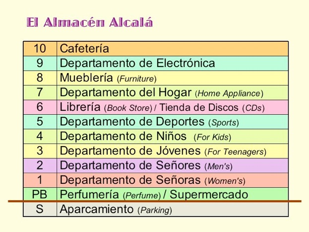
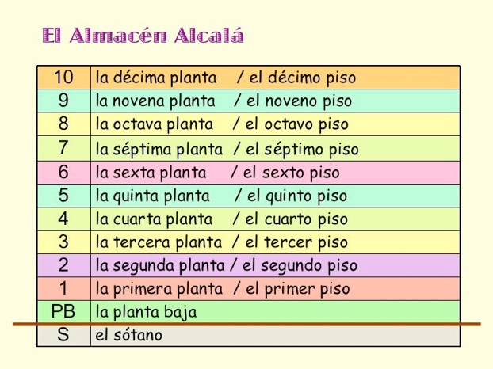

順序を示す数詞 números ordinales
> 順序を示す数詞 números ordinales ¿En qué piso / planta está el departamento de deportes? (What floor is the Sports department on?) - Está en el quinto piso . / Está en la quinta planta . (It's on the fifth floor.) La perfumería está en la planta baja . (The perfumery is on the ground floor.) El aparcamiento está en el sótano . (The parking lot is on the basement.)

